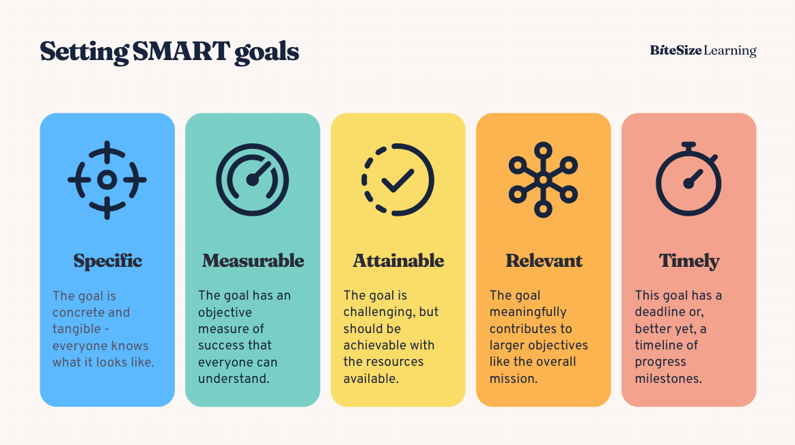

Eine Expansion kann viele Vorteile mit sich bringen. Schließlich zielt sie darauf ab, in einen neuen Markt vorzudringen oder eine neue Zielgruppe anzusprechen. Indem du deine unternehmerische Aktivität erweiterst, legst du das Fundament für nachhaltiges Wachstum und einen steigenden Absatz deiner Produkte oder Dienstleistungen. Bevor du allerdings mit deinem Projekt startest, bedarf es einer guten Vorbereitung. Und hier kommt die Market Expansion Strategy ins Spiel. Denn ohne wird es schwer, erfolgreich zu expandieren.
Wie aber sieht eine Market Expansion Strategy aus, welche Vorteile bringt sie mit und welche Möglichkeit hast du?
Lass uns starten.
Inhaltsverzeichnis
- Was ist eine Market Expansion Strategy?
- Warum eine Market Expansion in Erwägung ziehen?
- Welche Vorteile hat eine Market Expansion Strategy?
- Welche Market Expansion Strategies gibt es?
- Wie bei der Entwicklung einer Market Expansion Strategy vorgehen?
- Was, wenn die Market Expansion Strategy scheitert?
Was ist eine Market Expansion Strategy?
Bei einer Market Expansion Strategy handelt es sich um einen strategischen Plan, auf dessen Grundlage du dein Geschäft auf einen neuen Markt erweiterst. Du erschließt ein Kundensegment, das du bisher nicht mit deinen Produkten oder Dienstleistungen ansprichst. In der Gesamtheit sind Market Expansion Strategies faktisch deine Landkarten, die dir den Weg, sei es geografisch und/oder in Bezug auf eine Zielgruppe, zu Wachstum, Umsatzsteigerung und Marktplatzierung zeigen.
Warum eine Market Expansion in Erwägung ziehen?
Es gibt verschiedene Gründe, weshalb sich ein Unternehmen für eine Market Expansion entscheidet. Zu den häufig genannten gehört die Umsatzsteigerung. Insbesondere wenn der eigene Markt gesättigt ist, lohnt sich der Blick über den Tellerrand und die Expansion in einem Zielmarkt, bei dem die Nachfrage und infolgedessen das Umsatzpotential noch hoch sind.
Mit einer Market Expansion Strategy an der Hand geht auch stets eine Diversifizierung einher. Das verschafft dir den wesentlichen Vorteil, das Risiko zu streuen, das du hast, wenn du nur von einem Markt abhängig bist. Selbst gegenüber Schwankungen in der Wirtschaft, politischen Ereignissen oder Unvorhersehbarem bleibt dein Unternehmen deutlich robuster.
Nutze ferner den Skaleneffekt aus. Indem du deine Ausgaben über einen größeren Output verteilst, kannst du deine Effizient vervielfachen, deine Kosten aber langfristig senken.
Die Präsenz in mehreren Märkten führt zwangsläufig auch zu mehr Sichtbarkeit und damit einer höheren Markenbekanntheit. Damit geht nicht nur einher, dass der Umsatz, sondern auch der Marktwert steigt. Zeitgleich hältst du im Wettbewerb mit deinen Mitbewerbern Schritt oder setzt dich sogar deutlich von diesen ab.
Beleuchtet von einer nochmals anderen Seite verschafft dir eine Market Expansion Zugang zu neuen Talenten, die einem Fachkräftemangel vorbeugen können. Auch kannst du neue, fortschrittliche Technologien und Geschäftspraktiken in einem neuen Markt entdecken, die du bis jetzt nicht kanntest, die aber signifikant deine Produktivität und Wettbewerbsfähigkeit erhöhen könnten.
Welche Vorteile hat eine Market Expansion Strategy?
Eine gut geplante Market Expansion Strategy ist, plakativ gesagt, die halbe Miete, wenn es um deine Expansion geht. Sie hilft dir vor allem dabei, deine langfristigen Ziele zu erreichen und sicherzustellen, dass dein Wachstum kontinuierlich, aber kontrolliert verläuft.
Vorteile einer Market Expansion Strategy:
1. Risikominimierung
Indem du bei einer Market Expansion Strategy Marktforschung und Analysen durchführst und etwa Pilotprojekte startest, kannst du mögliche Risiken der Markterweiterung proaktiv identifizieren, geeignete Gegenmaßnahmen ergreifen und damit minimieren. Mit einer strategischen Herangehensweise vermeidest du, dass du teures Lehrgeld bezahlen musst und erhöhst im selben Atemzug die Wahrscheinlichkeit eines erfolgreichen Markteintritts.
2. Ressourcenallokation
Deine Ressourcen, seien es Kapital, Personal oder Zeit, sind begrenzt. Damit du diese wirklich effektiv für deine Expansion nutzen kannst, ist eine Market Expansion Strategy unverzichtbar. Du ortest beispielsweise im Vorfeld die attraktivsten Märkte, kannst den Skaleneffekt nutzen und Synergien zwischen verschiedenen Märkten und deinen Geschäftsbereichen schaffen.
3. Wettbewerbsvorteil
Wenn deine Market Expansion Strategy fruchtet und du neue Märkte erschließen, baust du dir nachhaltige Wettbewerbsvorteile auf. Sprich, eine Market Expansion Strategy befähigt dich dazu, deine Produkte und Dienstleistungen von deinen Mitbewerbern sinnvoll zu differenzieren, sie stark am Markt zu etablieren und einen loyalen Kundenstamm aufzubauen.
4. Innovation und Lernen
Neben den Vorteilen der Risikominimierung oder der Ressourcenverteilung fördert eine Market Expansion Strategy auch immer die unternehmensinterne Entwicklung, die du nicht verachten solltest. Eine Market Expansion Strategy bedarf schließlich neuen Ideen, fortschrittlichen Geschäftsmodellen und der Beschäftigung mit anderen Kulturen, Zielgruppen und Konkurrenten.
Ebenso kann eine Market Expansion bedeuten, dass du deine Produkte oder Dienstleistungen für den neuen Markt optimieren musst oder gar dazu inspiriert wirst, ganz neue zu schaffen. Ferner werden dir die Erfahrungen und Erkenntnisse, die du aus der Expansion gewinnen wirst, langfristig zur Verfügung stehen, die du dann auch auf andere Bereiche deines Unternehmens übertragen kannst.
5. Markenwahrnehmung und das globale Image
Ein ebenso nennenswerter Vorteil einer Market Expansion Strategy ist es, dass du mittels der Markterweiterung dein Image und die Wahrnehmung deiner Marke kontrolliert aufbaust. Sei es mit einer international Market Expansion Strategy oder global Market Expansion Strategies. Du kannst auf dem einmal gesetzten Fundament das Vertrauen bei Kunden, Investoren und Geschäftspartnern stärken und den gesamten Prozess selbst steuern, was erheblich dazu beiträgt, eine vernünftige Reputation sicherzustellen.
Welche Market Expansion Strategies gibt es?
Es wird zwischen vier Market Expansion Strategies unterschieden, die du je nach Zielausrichtung nutzen kannst:
- Marktdurchdringung
- Produktentwicklung
- Marktentwicklung
- Diversifikation
Hierbei handelt es sich glücklicherweise nicht nur um rein theoretische Ansätze, sondern um Market Expansion Strategies, die du unmittelbar in der Praxis umsetzen kannst. Wie das aussehen kann, verraten wir dir in den nächsten Abschnitten.
Marktdurchdringung (bestehendes Produkt, bestehender Markt)
Bei der Marktdurchdringung als deine Market Expansion Strategy konzentrierst du dich darauf, deine bestehenden Produkte oder Dienstleistungen in deinem aktuellen Markt zu stärken und ihren Umsatz zu steigern. Ergo versucht du etwa mehr von dem zu verkaufen, was du anbietest – sei es an Bestandskunden oder Neukunden. Die Herangehensweise ist oft der erste Schritt, den Unternehmen im Rahmen ihrer Market Expansion Strategy umsetzen. Wichtig dabei: Eine Marktdurchdringung funktioniert nur dann wirklich effektiv, wenn der Markt bislang nicht gesättigt ist. Allerdings bleibt so auch dein Risiko gering, da du dich weder auf unbekanntes Terrain begibst noch viel Geld in die Hand nehmen musst. Was dir bei dieser Market Expansion Strategy mit den Zielen der Marktanteilserhöhung, der Wettbewerbsfähigkeit und Profitmaximierung hilft, sind Preisstrategien, Werbekampagnen, Verkaufsförderungsaktionen oder eine Verbesserung von Services wie dem Kundendienst. Allerdings bleibt das Wachstumspotenzial bei diesem Vorgehen überschaubar.
Ein klassisches Beispiel für Marktdurchdringung ist ein Unternehmen, das seine Preise senkt, um mehr Kunden anzuziehen. Ein Mobilfunkanbieter bietet Rabatte oder verbesserte Tarifpläne an, um Kunden anzulocken oder dazu zu bewegen, von einem Konkurrenten zu wechseln.
Produktentwicklung (neues Produkt, bestehender Markt)
Bei der Produktentwicklung im Rahmen deiner Market Expansion Strategy optimierst du für deinen Markt deine bestehenden Produkte sowie Dienstleistungen, wandelst etwa Varianten ab oder führst ein gänzlich neues Angebot ein. Ziel dabei ist, deine bestehenden Märkte besser zu durchdringen oder neue Marktsegmente zu erschließen. Erreichen lässt sich diese, indem du deinen Fokus auf die Erhöhung des Kundenwerts bei deinem Sortiment legst. Schaue bei dieser Market Expansion Strategy immer darauf, das du bei allen Innovationen und Verbesserungen die Kundenwünsche berücksichtigst, um dich langfristig von deinen Mitbewerberbern abzuheben.
Da du für die Produktentwicklung etwas mehr Geld in die Hand nehmen musst, steigt auch das Risiko im Vergleich zur Marktdurchdringung. Um Fehlinvestitionen zu vermeiden, kannst du den Ansatz des Virtual Prototyping verfolgen. Du testest deine Innovation VOR der eigentlichen Entwicklung innerhalb einer virtuellen Umgebung unter komplett realen Bedingungen und Vermarktungsebenen. Dazu gehört etwa der Aufbau einer Webpräsenz.
Ein Beispiel für die Produktentwicklung ist die Einführung eines neuen Smartphone-Modells mit verbesserten Funktionen und Leistungen, um bestehende Fans zum Upgrade zu bewegen und neue, technikaffine Kunden zu gewinnen. Ein herausragendes Vorbild für eine solche Market Expansion Strategy ist zweifelsohne Apple.
Marktentwicklung (bestehendes Produkt, neuer Markt)
Du hast ein hervorragendes Produkt und willst einen neuen Absatzmarkt erobern? Dann ist die Marktentwicklung deine Market Expansion Strategy. Bei der Marktentwicklung strebst du danach, deine bestehenden Produkte oder Dienstleistungen in neue Märkten zu übertragen. Damit kann sowohl eine geografische Expansion (im Inland oder international) als auch die Ansprache neuer Zielgruppen oder die Erschließung weiterer Vertriebskanäle gemeint sein. Das Hauptziel ist es, neue Umsatzpotenziale zu entdecken und deinen Kundenstamm zu vergrößern. Ein Vorteil dieser Market Expansion Strategy ist es, dass du kein Geld für die Weiterentwicklung deiner Produkte in die Hand nehmen musst. Allerdings setzt die Marktentwicklung voraus, dass du dich fundiert mit dem neuen Feld, dessen Spielern, Gegnern und Zuschauern auskennst. Ferner gehört es unabdingbar dazu, sehr fein graduiertes Zielgruppenmarketing zu betreiben, was die jeweiligen kulturellen Besonderheiten berücksichtigt.
Ein Beispiel wäre ein Lebensmittelunternehmen, das seine Produkte auch international vertreiben möchte, um neue geografische Märkte zu erreichen.
Diversifikation (neues Produkt, neuer Markt)
Die wohl umfassendste, risikoreichste, aber auch, wenn geglückt, stärkste Market Expansion Strategy ist die Diversifikation. Das bedeutet, du führst ein neues Produkt in einen neuen Markt ein. Es gibt zwei Haupttypen der Diversifikation: verwandte und unverwandte Diversifikation. Bei der verwandten Diversifikation erweiterst du dein Angebot in Bereiche, die in einem logischen Zusammenhang mit deinen aktuellen Umfeldern stehen. Bei der unverwandten Diversifikation betrittst du völlig neue Geschäftsfelder, die keine direkte Verbindung zu deinen bisherigen Aktivitäten haben. Beachte, dass diese Market Expansion Strategy Geldeinsatz und Zeitinvestment bedeuten. Geht die Gleichung der zwei Unbekannten jedoch auf, wird sich aufgrund der enormen Umsatzsteigerung der Aufwand ohne Frage gelohnt haben.
Ein Beispiel für Diversifikation wäre ein Bekleidungshersteller, der anfängt, Sportgeräte zu produzieren und zu verkaufen – wenn es sich um verwandte Diversifikation handelt – oder in die Technologiebranche eintritt – bei einer unverwandten Diversifikation.
Wenn du dich zwischen den vier Market Expansion Strategy nicht entscheiden kannst oder von den Vorteilen mehrerer Strategien profitieren möchtest, gibt es Zwischenlösungen:
- Markterweiterung: Strategie des Vertriebs etablierter Produkte innerhalb neuer geografischer Märkte unter Beibehaltung der Zielgruppenkonsistenz.
- Produktmodifikation: Ansatz zur Überbrückung der Kluft zwischen Marktdurchdringung und Produktentwicklung, bei dem leichte Anpassungen an existierenden Produkten vorgenommen werden, um sie erneut im aktuellen Markt einzuführen.
- Begrenzte Diversifikation: Anpassung bestehender Produkte zur Erschließung neuer geografischer Märkte.
- Partielle Diversifikation: Strategie, die entweder den Vertrieb neuer Produkte in geografisch neue Märkte oder die Einführung modifizierter Produkte an neue Zielgruppen vorsieht.
Wie bei der Entwicklung einer Market Expansion Strategy vorgehen?
Nun weißt du, was eine Market Expansion Strategy ist, kennst ihre Vorteile und ihre vier gängigen Modelle. Kommen wir jetzt zu einem der interessantesten Teile: Wie entwickelst du nun in der Praxis eine solche Strategie?

1. Schritt: Ziele definieren
Vor dem Start deiner Marktexpansion solltest du klare, messbare und realistische Ziele festlegen. Alle Ziele sollten sich auf verschiedene Aspekte deiner Expansion beziehen, darunter Umsatz, Marktanteil, Kundenakquise und Markenbekanntheit. Gehe bei der Zielsetzung nach dem SMART-Prinzip vor.
Was sind SMART Ziele?
Spezifisch: Definiere genau, was du in jedem neuen Markt erreichen möchtest. Du könntest etwa anstreben, innerhalb des ersten Jahres nach Markteintritt einen bestimmten Umsatz zu erreichen oder einen bestimmten Prozentsatz des Marktanteils zu erobern.
Messbar: Stelle sicher, dass du deine Ziele quantifizieren kannst. Dies ermöglicht dir, den Fortschritt langfristig zu verfolgen und deine Erfolge zu messen. Beispiele für messbare Ziele könnten sein: 10.000 Einheiten deines Produkts im ersten Jahr zu verkaufen oder 500 neue Kunden in den ersten sechs Monaten zu gewinnen.
Erreichbar: Deine Ziele sollten herausfordernd, aber realistisch sein. Berücksichtige dafür deine Ressourcen, den Wettbewerb und die Marktbedingungen.
Relevant: All deine Ziele sollten eng mit den übergeordneten Unternehmenszielen und der Gesamtstrategie deines Unternehmens verknüpft sein. Sie sollten dazu beitragen, die langfristige Vision und Mission deines Unternehmens zu tragen und zu unterstützen.
Zeitgebunden: Setze klare Fristen für die Erreichung deiner Ziele. Zeitliche Vorgaben helfen dir, motiviert zu bleiben, den Fortschritt zu planen und zu überwachen.
Ein komplettes Beispielziel nach der SMART-Variante könnte lauten: „Wir erhöhen den Umsatz um 20 % innerhalb eines Jahres nach dem Markteintritt durch den Verkauf von Produkt X im neuen Zielmarkt Y.“
Dieses Ziel ist spezifisch (Erhöhung des Umsatzes durch Verkauf eines bestimmten Produkts), messbar (20 % Umsatzsteigerung), erreichbar (basierend auf einer realistischen Einschätzung), relevant (beiträgt zum Gesamtumsatzwachstum bei) und zeitgebunden (innerhalb eines Jahres).
Durch die Einbindung klar definierter Ziele in deine Market Expansion Strategy kannst du den Erfolg deiner Maßnahmen besser messen und sicherstellen, dass alle Aktivitäten auf die Erreichung dieser Ziele ausgerichtet sind – und vor allem auch bleiben.
2. 1. Marktforschung und Analyse
Nachdem deine Ziele klar sind, geht es bei der Market Expansion Strategy um die Erstellung einer umfassenden Analyse der potenziellen neuen Märkte. Nimm die demografischen Merkmale, Wirtschaftsindikatoren, kulturellen Unterschiede, rechtlichen Rahmenbedingungen und technologischen Entwicklungen genau unter die Lupe. Untersuche die Wettbewerbslandschaft, um die Stärken und Schwächen deiner Konkurrenten zu ergründen, und identifiziere Marktlücken, die du möglicherweise für dich nutzen kannst.
- Greife dafür auf Online-Ressourcen wie Statista, MarketResearch.com oder nationale Statistikbehörden, um relevante Marktdaten zu sammeln.
- Führe Umfragen oder Fokusgruppen mit potenziellen Kunden durch, um direktes Feedback zu erhalten und Kundensegmente kennenzulernen.
- Analysiere soziale Medien und Kundenbewertungen, um Einblicke in Trends und -präferenzen zu gewinnen.
3. Zielmarkt festlegen
Auf Basis deiner Marktforschung solltest du nun in der Lage sein, die attraktivsten Märkte für deine Market Expansion Strategy auswählen zu können. Deine Entscheidung basiert auf Faktoren wie Marktgröße, Zugänglichkeit, Wachstumspotenzial und Übereinstimmung mit deinem Produkt- oder Dienstleistungsangebot. Berücksichtige dabei auch immer deine eigenen Unternehmensziele und Ressourcen.
- Erstelle eine Rangliste deiner präferierten Märkte, basierend auf quantitativen und qualitativen Kriterien.
- Berücksichtige die Kosten für den Markteintritt und die operativen Kosten in den verschiedenen Märkten.
- Führe eine SWOT-Analyse (Stärken, Schwächen, Chancen, Risiken) für jeden potenziellen Markt durch.
4. Markteintrittsstrategie entwickeln
Dein neuer Zielmarkt ist verortet? Es geht in die heiße Phase der Market Expansion Strategy. Entscheide jetzt, wie du den Markt betreten willst: durch Export, Lizenzvergabe, Franchising, Gründung einer Tochtergesellschaft, Partnerschaft oder Akquisition. Jede dieser Optionen bringt einen unterschiedlichen Investitionsbedarf, Risiken und Kontrollniveaus mit sich. Lass dir daher Zeit und schaue dir jede der Möglichkeiten in Ruhe an.
- Erwäge die Gründung strategischer Partnerschaften oder Joint Ventures mit lokalen Unternehmen, um mögliche Markteintrittsbarrieren zu überwinden.
- Bewerte die Vor- und Nachteile jeder Markteintrittsoption in Hinblick auf deine Unternehmensziele und Ressourcen.
- Konsultiere lokale Experten oder Berater, um rechtliche und regulatorische Anforderungen später auch erfüllen zu können.
5. Marketing- und Vertriebsstrategie anpassen
Du willst nach deinem Markteintritt natürlich auch so schnell wie möglich deine Zielgruppe erreichen. Das gelingt mit der Gestaltung von Marketing- und Vertriebsstrategien, die speziell auf den Zielmarkt zugeschnitten sind. Berücksichtige dabei kulturelle Besonderheiten, Sprache, lokale Trends und Zielgruppenverhalten. Passe deine Produktangebote, Preismodelle, Werbebotschaften und Vertriebskanäle entsprechend an.
- Entwickle kulturspezifische Marketingmaterialien und Kampagnen, die Resonanz im Zielmarkt finden.
- Wähle Vertriebs- und Distributionspartner sorgfältig aus, die gute Kenntnisse des lokalen Markts haben.
- Nutze digitales Marketing und soziale Medien, um deine Zielgruppe effektiv zu erreichen.
Website- und Übersetzungsmanagement
Ihre Strategie zur Markterweiterung sollte die Etablierung einer umfassenden Lokalisierungsstrategie priorisieren. Dies umfasst die Einführung eines ausgeklügelten Übersetzungsmanagement-Systems (TMS) sowie einen gut orchestrierten Lokalisierungsansatz, der sicherstellt, dass Ihre Website sowohl sprachlich als auch kulturell mit der Zielgruppe resoniert.
Investieren Sie in ein robustes Übersetzungsmanagement-System, das den Lokalisierungsprozess strafft und Effizienz sowie Konsistenz über alle digitalen Inhalte hinweg sicherstellt. Ein TMS kann die Zusammenarbeit zwischen Übersetzern, Editoren und Projektmanagern erleichtern und den Zeitaufwand sowie die Mühe für großangelegte Lokalisierungsprojekte erheblich reduzieren.
Entwickeln Sie eine Lokalisierungsstrategie, die über die bloße Übersetzung hinausgeht. Verstehen Sie die kulturellen Nuancen, das Konsumentenverhalten und die Markttrends Ihrer Zielregion. Diese Strategie sollte lokale Bräuche, Werte und Vorlieben umfassen und sicherstellen, dass Ihre Website, von Inhalten bis hin zu Visuals, mit der lokalen Kultur übereinstimmt.
Die Zusammenarbeit mit lokalen Experten oder professionellen Übersetzern ist entscheidend, um authentische und kulturell relevante Inhalte zu erreichen. Sie können Einblicke in lokale Ausdrücke, Maßeinheiten, Feiertage und andere kulturelle Spezifika bieten, die die lokale Attraktivität Ihrer Website erhöhen.
Betonen Sie die Anpassung Ihrer digitalen Präsenz an mobile Plattformen, in Anbetracht der vorherrschenden Nutzung des mobilen Internets in vielen Zielmärkten. Eine für Mobilgeräte optimierte Website ist nicht nur eine Präferenz, sondern eine Notwendigkeit, um ein breiteres Publikum zu erreichen.
Integrieren Sie lokales Kundenfeedback und Analysen in Ihre Strategie, um Ihre lokalisierten Inhalte kontinuierlich zu verfeinern und zu optimieren. Diese Feedbackschleife kann Bereiche zur Verbesserung identifizieren und Ihnen helfen, besser auf die Bedürfnisse und Vorlieben des lokalen Publikums einzugehen.
Die Zusammenarbeit mit einer spezialisierten Agentur kann wertvolle Expertise sowohl in der Lokalisierung als auch in den technischen Aspekten für eine erfolgreiche internationale Webpräsenz bieten. Solche Partnerschaften bieten Zugang zu spezialisierten Fähigkeiten und Wissen, von professionellen Übersetzungen bis hin zu technischen Optimierungen, und stellen sicher, dass Ihre Lokalisierungsstrategie effektiv umgesetzt und mit Ihren Geschäftszielen abgestimmt wird.
Indem Sie ein Übersetzungsmanagement-System und eine umfassende Lokalisierungsstrategie priorisieren, positionieren Sie Ihr Unternehmen für den Erfolg in neuen Märkten, indem Sie sicherstellen, dass Ihre digitalen Inhalte zugänglich, relevant und ansprechend für Ihr Zielpublikum sind. Dieser Ansatz verbessert nicht nur die Markenwahrnehmung, sondern fördert auch Vertrauen und Loyalität bei lokalen Kunden.
➡️ Erstelle ein kostenloses [Benutzerkonto](https://www.locize.app/register für ein transformatives Lokalisierungserlebnis.
6. Operations- und Lieferkettenmanagement
Zu jeder Market Expansion Strategy gehört es auch, dass du deine Logistik sowie die dazugehörigen betrieblichen Abläufe detailliert planst. Es gibt heute kaum etwas, das sich negativer auf deinen Erfolg auswirkt als eine ineffiziente Lieferkette. Schließlich geht es um Service am Kunden. Und die sind es mittlerweile gewohnt, alles ohne lange Lieferzeiten oder Umwege zu erhalten. Berücksichtige dabei auch lokale Besonderheiten wie Logistik, Zoll, Steuern und Arbeitskräfte.
- Etabliere robuste Lieferkettenprozesse und arbeite mit zuverlässigen, lokalen Lieferanten und Logistikpartner zusammen.
- Beachte lokale Vorschriften und Standards in Bezug auf Produktion, Verpackung und Etikettierung.
- Implementiere ein effektives Bestands- und Lagerhaltungsmanagement, um Lieferengpässe zu vermeiden.
6. Finanzielle Planung
Mit einer Market Expansion strebst du natürlich auch eine Umsatzsteigerung an. Entsprechend gehört es zu deiner Market Expansion Strategy dazu, detaillierte finanzielle Prognosen aufzustellen und Budgets festzulegen. Berücksichtige dabei sowohl einmalige Kosten (z. B. Markteintrittskosten) als auch laufende Betriebskosten. Plane auch für unerwartete Ausgaben und potenzielle Währungsrisiken Puffer ein.
- Beziehe Finanzmodelle in deine Market Expansion Strategy ein, um verschiedene Szenarien durchzuspielen und zu sehen, wie sich unterschiedliche Marktsituationen auf deine Finanzen auswirken.
- Sichere ausreichende Finanzierung und Liquidität, um die Expansionsphase zu unterstützen.
- Implementiere ein effektives Kostenkontroll- und Monitoring-System, um deine Finanzen im Auge zu behalten.
7. Monitoring und Anpassung
Die Grundlage für deinen langfristigen Erfolg an einem neuen Markt ist das kontinuierliche Monitoring und Evaluierung deiner Aktivitäten. Innerhalb der Market Expansion Strategy solltest du den Fortschritt deiner festgelegten Ziele, sowohl deine Marktleistung und -performance als auch das Feedback der Kunden berücksichtigen. Es ist wichtig, dass du quantitative und qualitative Daten erfasst, um ein vollständiges Bild deiner Expansion zu erhalten.
- Nutze CRM-Systeme, Analytics-Tools und Finanzberichterstattung, um wichtige Leistungsindikatoren (KPIs) wie Umsatz, Marktanteil, Kundenakquise und Kundenzufriedenheit zu verfolgen.
- Plane regelmäßige Sessions ein (z. B. monatlich oder vierteljährlich), um den Fortschritt zu bewerten und zu diskutieren. Hierfür stellst du ein Team aus verschiedenen Bereichen zusammen, um unterschiedliche Perspektiven einzubeziehen.
- Sammle aktiv Feedback von Kunden, Partnern und Mitarbeitern im neuen Markt. Greife dazu auf Umfragen, Kundeninterviews und Marktforschung zurück, um Einblicke in die Marktreaktion und Kundenbedürfnisse zu gewinnen.
Sei aber auch bereit, basierend auf den Ergebnissen, deine Market Expansion Strategy anzupassen. Stelle dich etwa auf Änderungen an Produkten, Marketingansätzen oder sogar an der gesamten Markteintrittsstrategie ein.
Was, wenn die Market Expansion Strategy scheitert?
Wenn deine Marktexpansions-Strategie scheitert, ist es wichtig, nicht den Mut zu verlieren oder vorschnelle Schlüsse zu ziehen. Scheitern ist ein natürlicher Bestandteil des Unternehmertums und hält wertvolle Lektionen bereit, die zur Verbesserung deiner zukünftigen Market Expansion Strategy beitragen.
Zuerst solltest du eine gründliche Analyse durchführen, um die Gründe für das Scheitern deiner Market Expansion Strategy zu identifizieren. Beleuchte alle Aspekte deiner Market Expansion Strategy, von der Marktforschung und Zielgruppenanalyse bis zu Marketing und Vertrieb. Schaue genau hin, welche Annahmen falsch waren, welche Ansätze nicht funktioniert haben und ob externe Faktoren wie wirtschaftliche Veränderungen oder unvorhergesehene Ereignisse eine Rolle gespielt haben.
Nutze diese Gelegenheit, um aus deinen Fehlern zu lernen und deine Market Expansion Strategy zu optimieren. Dies kann bedeuten, deine Zielgruppen besser zu ergründen, deine Produkte oder Dienstleistungen anzupassen oder deine Marketing- und Vertriebsbemühungen zu überdenken. Basierend auf deiner Analyse und den gewonnenen Erkenntnissen, kannst du dann deine Market Expansion Strategy entsprechend anpassen. Damit gemeint sind sowohl kleinere Optimierungen als auch eine umfassende Überarbeitung deiner Market Expansion Strategy Pläne. Sei offen für Veränderungen und bereit, gänzlich Neues auszuprobieren.
Nachdem du deine Market Expansion Strategy neu ausgerichtet hast, entwickle einen neuen Plan für den Vorstoß in den Markt oder für die Neuausrichtung deiner Tätigkeit. Setze dir dazu wieder realistische Ziele und Meilensteine und stelle sicher, dass du ausreichend Ressourcen für die Umsetzung parat hast.
Es sei nochmals gesagt: Scheitern ist kein Grund, um aufzugeben. Viele erfolgreiche Unternehmen sind anfänglich gescheitert, bevor sie ihren Weg zum Erfolg gegangen sind. Bewahre deine Entschlossenheit und bleibe engagiert bei der Verfolgung deiner Unternehmensziele.
Wichtig ist es ohnehin, dass du aus jedem Scheitern lernst und dieses einzigartige Wissen nutzt, um deine zukünftigen Bemühungen zu verbessern. Indem du resilient bleibst und bereit bist, dich anzupassen und zu lernen, kannst du die Chancen auf zukünftigen Erfolg erhöhen.